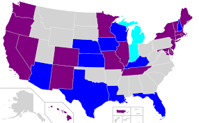
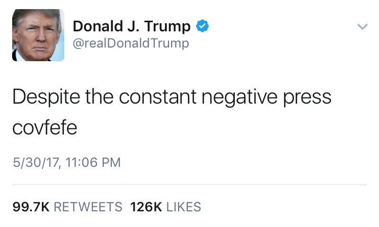
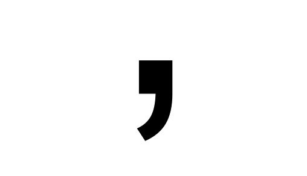
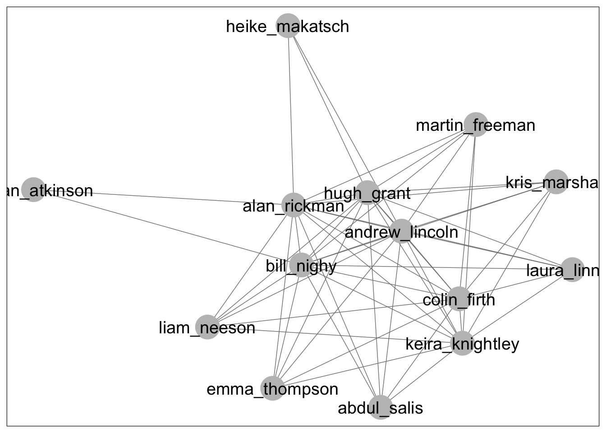

Your Data and Visualisations


Exercises
In this session, we will be thrown from one real-life dataset to another to make quick judgments about which visualisation is most appropriate and how to construct it.
The datasets have been sourced from the political poll website FiveThirtyEight, founded by America’s most famous data analyst, Nate Silver. If you want to hone your skills further, you can find many more CC-licensed datasets there.
We have cleaned the data for you and will show you a snippet of what its structure looks like. Based on that structure, in groups of three:
discuss which visualisation would be appropriate (there is no unique right answer here)
implement it in
ggplot2by choosing the aesthetics and geom objectsbonus points if you add sensible labels and axes
Think of it as a “visualiz-athon”, but don’t stress about finishing all of them. In fact, feel free to pick and choose whichever dataset tickles your fancy.
First, however, we will need to install and attach the following libraries. We install using, for example, install.packages("tidyverse").
library(tidyverse)
library(RCurl) #Case-sensitive
library(ggmap)
library(maps)
library(network)
library(sna)
library(GGally)1. What predicts hate crimes in America?
Dataset: hate_crimes.csv
The US has an acute problem with hate crimes. In the week following Trump’s 2016 election night, the hate crimes famously spiked compared with the long-running average.
Sociologists argue that it is not a uniformly distributed problem, however. They suspect that it could be related to factors like inequality, urban living and median income.

They have data on the average number of hate crimes (per 100,000 people) in USA between 2010 and 2015 for each American state. They also have a measurement for inequality called gini_index, the proportion of people living in metro areas, and the median income of the state.
As you see below, the dataframe is called hatedata and its columns are called median_houshold_income, gini_index, and share_population_in_metro_areas.
| state | median_household_income | gini_index | share_population_in_metro_areas | avg_hatecrimes_per_100k_fbi |
|---|---|---|---|---|
| Alabama | 42278 | 0.472 | 0.64 | 1.80641 |
| Alaska | 67629 | 0.422 | 0.63 | 1.65670 |
| Arizona | 49254 | 0.455 | 0.90 | 3.41393 |
| Arkansas | 44922 | 0.458 | 0.69 | 0.86921 |
| California | 60487 | 0.471 | 0.97 | 2.39799 |
| Colorado | 60940 | 0.457 | 0.80 | 2.80469 |
What would be a suitable visualization for sociologists to investigate whether these three factors play a role? Is it feasible to combine them all into one or are they better split into several graphs? What possible problems do you see in your graph that could make analysis more difficult?
ggplot(hatedata, aes(x=____, y=_____)) + geom___()2. Do Pulitzers matter for a newspaper’s growth?
Dataset: pulitzer-circulation-data.csv
The finest honour any investigative journalist could aspire to is called the Pulitzer Prize. The owners of the newspaper they work for surely wouldn’t mind either, as this could lead to a boost in circulation. But is there empirical evidence to support their assumption that Pulitzers matter for sales?

In the dataset below, called puldata, there is information on the size of their circulation in 2004 (Daily.Circulation..2004), the percentage by which it grew or declined between 2004 and 2013 (Change.in.Daily.Circulation) and finally how many Pulitzer Prize winners worked at the newspaper between those years (Pulitzer.Prize.Winners.and.Finalists..2004.2014).
| Daily.Circulation..2004 | Change.in.Daily.Circulation..2004.2013 | Pulitzer.Prize.Winners.and.Finalists..2004.2014 |
|---|---|---|
| NA | -24% | 1 |
| NA | +13% | 20 |
| NA | +67% | 62 |
| 983727 | -34% | 41 |
| 760034 | -38% | 48 |
| 712671 | -28% | 2 |
Is there a relationship, would you say? Is there a way to make the visualisation also show whether the initial 2004 circulation influenced the Pulitzer-fueled growth?
ggplot(puldata, aes(x=________________)) + geom______()3. What is the shape of Trump’s twitter popularity?
Dataset: realDonaldTrump.csv
Now to American politics and their principal arena: the Twitter-verse.

Trump boasts an impressive following of more than 150 million accounts (perhaps with a few Russian bots included), but follower numbers never give a full story. Political scientists may want to have a closer look at the number of interactions, and specifically how many people like (or ‘favorite’) his tweets.
In the trumpdata prepared below, there is a url giving the link to his tweet, replies, retweets, and favorites.
| url | replies | retweets | favorites |
|---|---|---|---|
| https://twitter.com/realDonaldTrump/status/922440008971292672 | 46228 | 10243 | 49468 |
| https://twitter.com/realDonaldTrump/status/922430688703451136 | 31419 | 14006 | 62406 |
| https://twitter.com/realDonaldTrump/status/922428118685581313 | 9552 | 13719 | 62662 |
| https://twitter.com/realDonaldTrump/status/922072236592435200 | 56238 | 25102 | 112890 |
| https://twitter.com/realDonaldTrump/status/922070659093671936 | 32136 | 21573 | 97145 |
| https://twitter.com/realDonaldTrump/status/922067676708638721 | 11153 | 7336 | 42415 |
How could you show to political scientists the general tendencies of his favorite-numbers? Are they always hovering around the same number? Are some massively more popular than most?
ggplot(trumpdata, aes(x=_____)) + geom______()4. Which politicians are most rapped about?
Dataset: genius_hip_hop_lyrics.csv
On the same political note, but on a different platform, data from the musical lyrics website Genius.com reveals that politcians are a favourite topic in rap songs. This popularity stretches decades back.

Clever social scientists studying this phenomenon have applied a technique called sentiment analysis to determine whether the rapper’s attitude towards the politician is positive, negative or neutral.
Have a look at the hiphopdata set below, and its three fields candidate, song, artist, and sentiment.
| candidate | song | artist | sentiment |
|---|---|---|---|
| Mike Huckabee | None Shall Pass | Aesop Rock | neutral |
| Mike Huckabee | Wellstone | Soul Khan | negative |
| Jeb Bush | Awe | Dez & Nobs | neutral |
| Jeb Bush | The Truth | Diabolic | negative |
| Jeb Bush | Money Man | Gorilla Zoe | negative |
| Jeb Bush | Hidden Agenda | K-Rino | negative |
Which politicians are given the rap treatment most often, we wonder? And is there a way to visualize conveniently the proportion of different rap sentiments among the lyrical references?
ggplot(hiphopdata, aes(x=_____, fill=______)) + geom_____(____)5. Who cares about the Oxford comma?
Dataset: comma-survey.csv
Now for a controversial, English-related debate. As you may know, the Oxford comma refers to whether, at the end of a listing, you should add a comma or not before the last item. For example, is it right to say It’s important for a person to be honest, kind and loyal. or would you rather have it as It’s important for a person to be honest, kind, and loyal.

To settle the matter via democratic processes, a poll was conducted that asked people which option they preferred. The pollsters also asked about their education background, thinking that perhaps postgraduates would be more pedantic in the matter.
The data has been prepared below, in commaperc, which contains the percentages (freq) of people for each Education group who preferred one or the other.
| Education | Opinion | n | freq |
|---|---|---|---|
| It’s important for a person to be honest, kind and loyal. | 50 | 0.48544 | |
| It’s important for a person to be honest, kind, and loyal. | 53 | 0.51456 | |
| Bachelor degree | It’s important for a person to be honest, kind and loyal. | 145 | 0.42151 |
| Bachelor degree | It’s important for a person to be honest, kind, and loyal. | 199 | 0.57849 |
| Graduate degree | It’s important for a person to be honest, kind and loyal. | 104 | 0.37681 |
| Graduate degree | It’s important for a person to be honest, kind, and loyal. | 172 | 0.62319 |
So, postgraduates - are we more pedantic about the Oxford commas?
ggplot(commaperc, aes(x=_____, y= _____, fill=_____)) + geom____(_____)6. Which airlines are the best to fly with?
Dataset: airline-safety.csv
With the twin Boeing disasters fresh in memory, we are excused to sometimes worry a bit about the safety records of modern airlines. So let’s have a look at them.
In the airdata dataset below, there is a number of fatalities between 2000-2014 given as a heartless statistic in fatalities_00_14 for each airline. Have a look.
| airline | avail_seat_km_per_week | incidents_85_99 | fatal_accidents_85_99 | fatalities_85_99 | incidents_00_14 | fatal_accidents_00_14 | fatalities_00_14 |
|---|---|---|---|---|---|---|---|
| Malaysia Airlines | 1039171244 | 3 | 1 | 34 | 3 | 2 | 537 |
| American* | 5228357340 | 21 | 5 | 101 | 17 | 3 | 416 |
| Air France | 3004002661 | 14 | 4 | 79 | 6 | 2 | 337 |
| Kenya Airways | 277414794 | 2 | 0 | 0 | 2 | 2 | 283 |
| China Airlines | 813216487 | 12 | 6 | 535 | 2 | 1 | 225 |
| TAM | 1509195646 | 8 | 3 | 98 | 7 | 2 | 188 |
This data has already been sorted from high-to-low. We wonder of course whether we could summarise visually which airline we should avoid in the future, assuming that their past incidents has something to say about their future safety.
With so many airlines on display, is there a way to prevent it looking cluttered?
ggplot(airdata, aes(y=_____, x=_____)) + geom___() 7. What is the teenagers’ drug of choice?
Dataset: drug-use-by-age.csv
Many communities struggle with youth drug use, which could be carried over to later stages of life. To monitor the shares of people at different ages using drugs, authorities have collected cross-sectional data showing, for each drug, how many percent use it in each age interval.
This data is found in drugdata, which has the fields drug and percentage.
| age | marijuana | drug | percentage |
|---|---|---|---|
| 12 | 1.1 | cocaine | 0.1 |
| 13 | 3.4 | cocaine | 0.1 |
| 14 | 8.7 | cocaine | 0.1 |
| 15 | 14.5 | cocaine | 0.5 |
| 16 | 22.5 | cocaine | 1.0 |
| 17 | 28.0 | cocaine | 2.0 |
How could we look into the trends in different drugs’ popularity over the life span? How could we minimise the visual confusion in doing so?
ggplot(drugdata, aes(x=____ , group=____, y=______)) + geom_____(___________)8. Where are all the women in biopics?
Dataset: biopics.csv
Abraham Lincoln, Winston Churchill, and Freddie Mercury have all been the subject of a biographical motion picture, also known as biopic. Every Great Man of History seems to have led a Hollywood actor to an Oscar. But where are all the Women of History?
Film nerds have collected the following data biopics which shows the year of release (year_release), the gender of the subject (subject_sex), the title, the subject name and the lead_actor_actress who played them.
| year_release | subject_sex | title | subject | lead_actor_actress |
|---|---|---|---|---|
| 1971 | Male | 10 Rillington Place | John Christie | Richard Attenborough |
| 2013 | Male | 12 Years a Slave | Solomon Northup | Chiwetel Ejiofor |
| 2010 | Male | 127 Hours | Aron Ralston | James Franco |
| 2014 | Male | 1987 | Ricardo Trogi | Jean-Carl Boucher |
| 1998 | Male | 20 Dates | Myles Berkowitz | Myles Berkowitz |
| 2008 | Male | 21 | Jeff Ma | Jim Sturgess |
Is there a convenient way for us to visualize how this proportion in gender has changed over the last decades? Are female biopics on the rise or has it stayed constant?
ggplot(biopicdata, aes(x=_______, fill=______)) + geom_____(____) 9. Where do people marry their second cousins?
Dataset: cousin-marriage-data.csv
People born and bred in UK may be surprised to learn that marrying second cousins is a common practice. There are many reasons for doing so: staying close to the family and community, minimising the disruption of marriage, keeping property among consanguines…
We would therefore expect this to have a relationship with factors like poverty. In the data below, a dataframe containing the (long,lat) coordinates that define the corners of some countries has been merged with data that gives the Percent of how many people marry their second cousins.
| long | lat | group | order | region | subregion | Percent |
|---|---|---|---|---|---|---|
| -69.89912 | 12.45200 | 1 | 1 | Aruba | NA | NA |
| -69.89571 | 12.42300 | 1 | 2 | Aruba | NA | NA |
| -69.94219 | 12.43853 | 1 | 3 | Aruba | NA | NA |
| -70.00415 | 12.50049 | 1 | 4 | Aruba | NA | NA |
| -70.06612 | 12.54697 | 1 | 5 | Aruba | NA | NA |
| -70.05088 | 12.59707 | 1 | 6 | Aruba | NA | NA |
Moving into the territory of geospatial data visualization, could you figure out a way of showing in an overlay of the world map, how many people in each country engage in this practice?
ggplot(map2, aes(x=___, y=____, group=_____, fill=______)) + geom______()Beyond ggplot2 (extension)
10. Network data:
Dataset: love_actually_adjacencies.csv
If you ever found yourself watching the romcom Love, Actually on Christmas, then you may have marvelled at how the screenwriters managed to weave together such a complex ensemble script. You may wonder if they ever used some kind of network visualization to map out all the character interactions.
Unfortunately, ggplot does not provide convenient support for networks, but via a set of libraries called networks, sna and GGally we could nevertheless cobble together a dataframe where the two first columns (actor and actors) give the characters in an interaction, and the third (number) gives the interaction frequency.
| actors | actor | number |
|---|---|---|
| bill_nighy | bill_nighy | 9 |
| keira_knightley | bill_nighy | 2 |
| andrew_lincoln | bill_nighy | 2 |
| hugh_grant | bill_nighy | 2 |
| colin_firth | bill_nighy | 1 |
| alan_rickman | bill_nighy | 1 |
Using the function ggnet2 we could simply feed the network to it. Now you know! (no exercise for this one :) )
ggnet2(lanet, label = TRUE, label.size = 5)